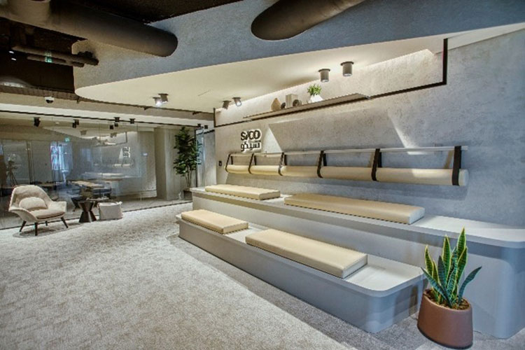
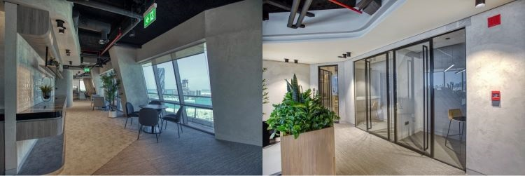
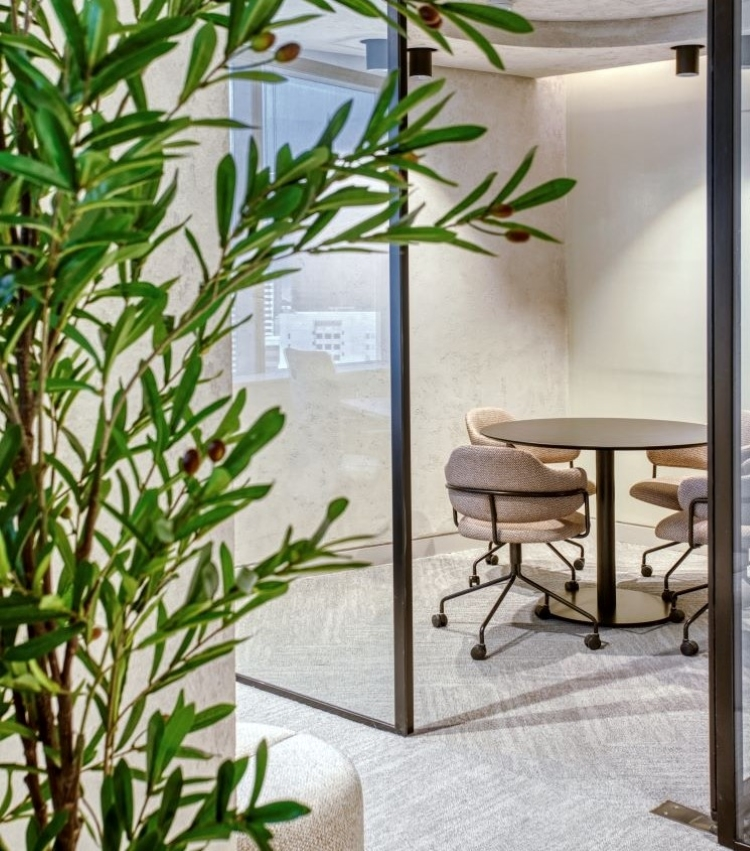
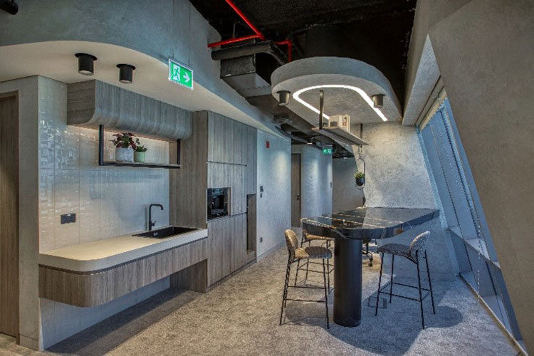

A major milestone in 2022 has been our move to the new offices in the Bahrain World Trade Center, with its state-of-the-art facilities and innovative design. Relocating to our new offices, it was important for us to use the space to represent the work culture at SICO that reflects why we love to come to work every day, what we stand for as an organization, and what makes us unique as a team. It was a primary goal to create an atmosphere that cultivates, once again, a sense of collaboration and strong work relationships, in addition to a deep sense of belonging to the workplace and the team.

The Tree of Life served as the main inspiration for the design of our new offices. Said to be over 400 years old, the tree stands abundantly covered in green leaves on a barren hill in the Arabian desert and is seen as a symbol of history and hope. The inspiration of the Tree of Life influenced the floor planning and placements, encouraging a connection within the bank to a central meeting point.
Every one of the three floors we occupy holds a common communal area in the middle where colleagues can sit, talk, eat, and bond in a comfortable and relaxed setting. Branching out of the communal area are the departments and offices, which open onto these collaborative spaces that provide the ideal environment to brainstorm, connect, and work together as one. They include phone booths and meeting rooms for more private and quiet assemblies, and they are designed to invite staff out of their offices to work together, helping them become more productive, and delivering an integrated platform where big ideas can come to life and where teams can draw onto the experiences of various areas and members within SICO.
The concept blends our appreciation of Bahraini context and future innovation. The dichotomy between cultural reference and progressive modernism is displayed through the stainless steel, textured glass, rough stone, and warm wood tones. Modern design elements convey SICO’s innovative approach, while earthy, contextually appropriate materials communicate reliability and history.

At SICO, 37% of our workforce are female staff and there are 10 nationalities represented within our extended team. We pride ourselves in honouring our differences and believe that our strength comes from respecting the individuality of every member of our family. At our new offices, we ensured that prayer rooms were adequately provided to allow them to practice their faith, and wellness rooms were introduced for the first time acting as lactation spaces for new moms as well as quiet spaces for employees in need of a boost of energy.

Leading the way for sustainable architecture, the BWTC is the world's first skyscraper to incorporate wind turbines into its design. The three huge wind turbines between the towers – each 29 metres in diameter – help to reduce the overall power consumption of the towers and create clean energy.
At SICO’s new offices, we looked around Bahrain for inspiration for our colour palette. Sand colours were derived from the natural features of Bahrain and the Green Corner building set the colours and tones, all which instil a natural feeling and reflect our commitment to sustainability. The creme palette is classic sophistication, with beige tones that are neutral, calm, and relaxing. It creates a general softness within an interior, allowing the occupants to bring out the variation and colour within themselves.
Energy efficiency and minimization of emissions are both factors that have been embedded into the design and operation of the new offices. We introduced new printing rules to reduce our paper waste, abolished the use of plastic cups by providing reusable bottles that can be filled at water dispensers located throughout the offices, began recycling, and installed LED lights to reduce our carbon emissions.